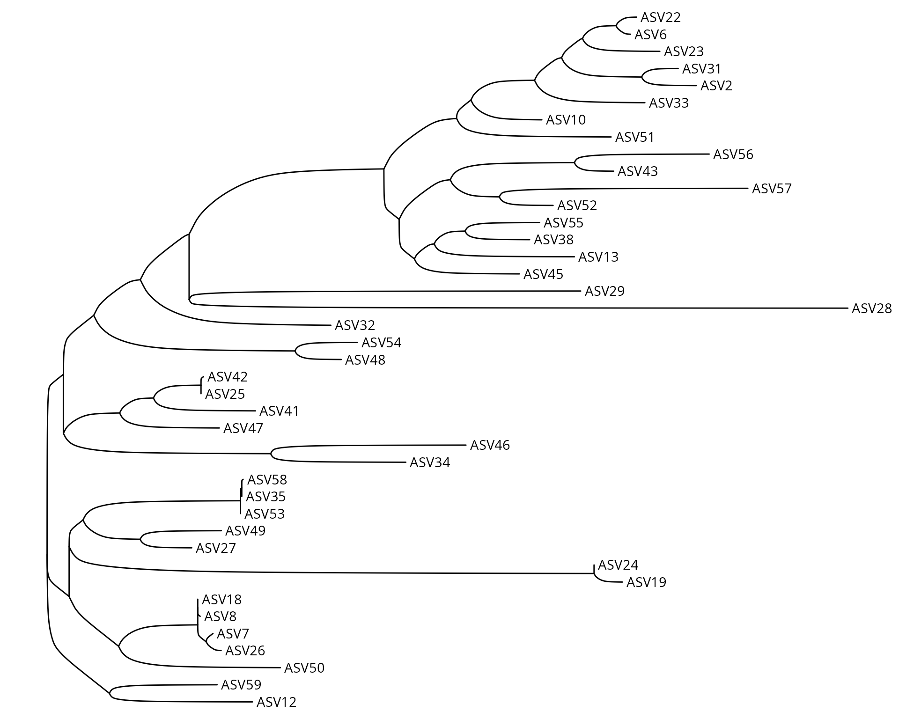
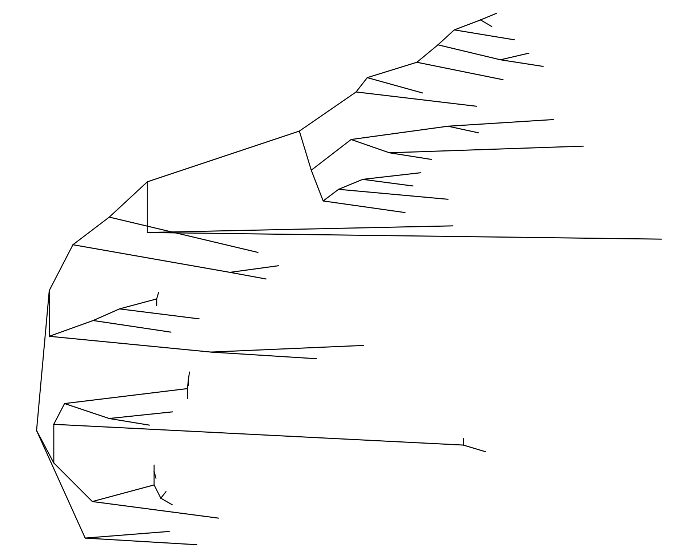
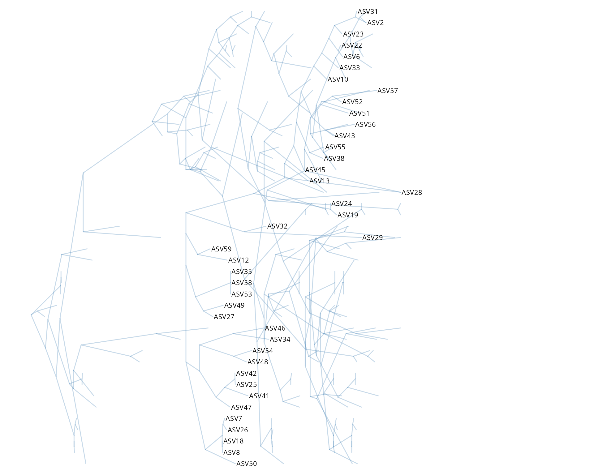
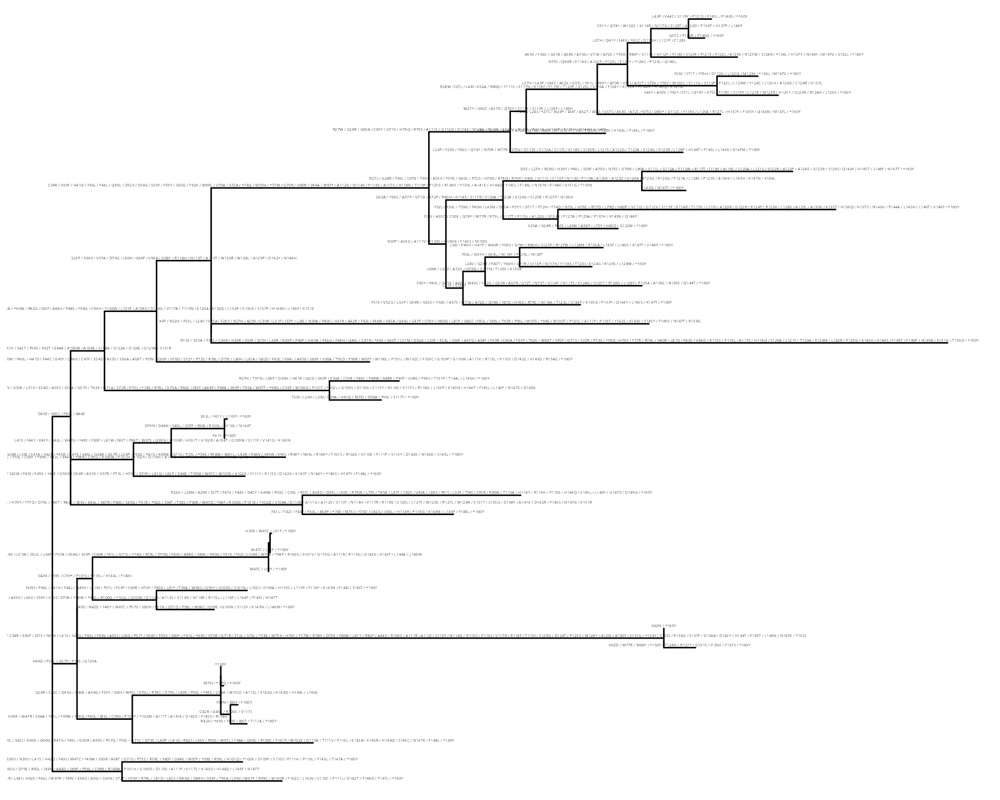
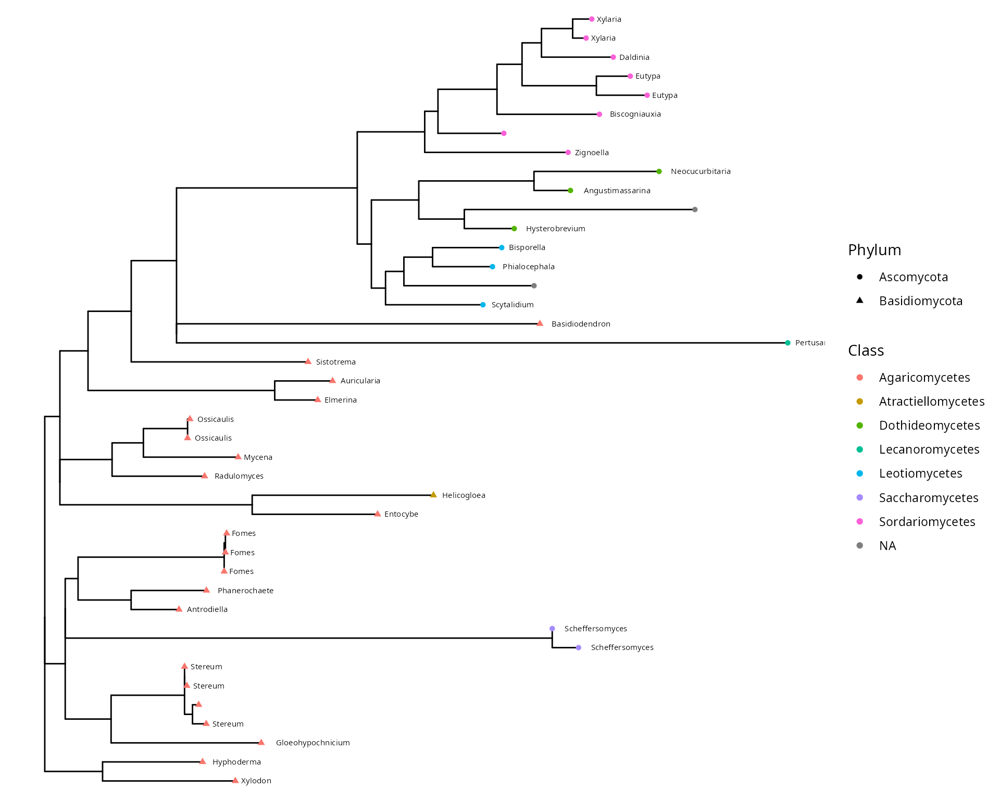
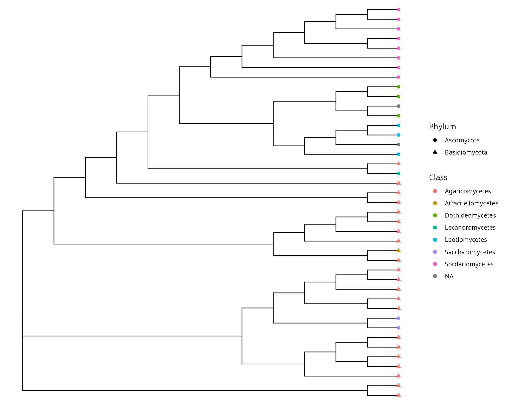

Tree building and visualization
Source:vignettes/articles/tree_visualization.Rmd
tree_visualization.RmdIn introduction, you can read the review of Zou et al. (2024), entitled “Common Methods for Phylogenetic Tree Construction and Their Implementation in R“.
Build phylogenetic tree using reference sequences
library("tidytree")
library("MiscMetabar")
library("phangorn")
data(data_fungi)
df <- subset_taxa_pq(data_fungi, taxa_sums(data_fungi) > 9000)
df_tree <- quiet(build_phytree_pq(df, nb_bootstrap = 5))
data_fungi_tree <- merge_phyloseq(df, phyloseq::phy_tree(df_tree$ML$tree))
library("treeio")
library("ggtree")
ggtree(data_fungi_tree@phy_tree, layout = "ellipse") + geom_tiplab()
ggtree(as.treedata(df_tree$ML), layout = "slanted")
ggdensitree(df_tree$ML_bs, alpha = 0.3, colour = "steelblue") +
geom_tiplab(size = 3) + hexpand(0.35)
ggtree(as.treedata(df_tree$ML)) +
geom_text(aes(x = branch, label = AA_subs, vjust = -0.5), size = 1)
tax_tab <- as.data.frame(data_fungi_tree@tax_table)
tax_tab <- data.frame("OTU" = rownames(tax_tab), tax_tab)
p <- ggtree(as.treedata(data_fungi_tree@phy_tree)) %<+%
tax_tab
p + geom_tippoint(aes(color = Class, shape = Phylum)) +
geom_text(aes(label = Genus), hjust = -0.2, size = 2)
ggtree(as.treedata(data_fungi_tree@phy_tree), branch.length = "none") %<+%
tax_tab +
geom_tippoint(aes(color = Class, shape = Phylum), size = 2)
Session information
sessionInfo()
#> R version 4.5.2 (2025-10-31)
#> Platform: x86_64-pc-linux-gnu
#> Running under: Pop!_OS 24.04 LTS
#>
#> Matrix products: default
#> BLAS: /usr/lib/x86_64-linux-gnu/blas/libblas.so.3.12.0
#> LAPACK: /usr/lib/x86_64-linux-gnu/lapack/liblapack.so.3.12.0 LAPACK version 3.12.0
#>
#> locale:
#> [1] LC_CTYPE=en_US.UTF-8 LC_NUMERIC=C
#> [3] LC_TIME=en_US.UTF-8 LC_COLLATE=en_US.UTF-8
#> [5] LC_MONETARY=en_US.UTF-8 LC_MESSAGES=en_US.UTF-8
#> [7] LC_PAPER=en_US.UTF-8 LC_NAME=C
#> [9] LC_ADDRESS=C LC_TELEPHONE=C
#> [11] LC_MEASUREMENT=en_US.UTF-8 LC_IDENTIFICATION=C
#>
#> time zone: Europe/Paris
#> tzcode source: system (glibc)
#>
#> attached base packages:
#> [1] stats graphics grDevices utils datasets methods base
#>
#> other attached packages:
#> [1] ggtree_4.0.4 treeio_1.34.0 phangorn_2.12.1 ape_5.8-1
#> [5] MiscMetabar_0.15.1 divent_0.5-3 purrr_1.2.1 dplyr_1.2.0
#> [9] dada2_1.38.0 Rcpp_1.1.1 ggplot2_4.0.2 phyloseq_1.54.2
#> [13] tidytree_0.4.7
#>
#> loaded via a namespace (and not attached):
#> [1] RColorBrewer_1.1-3 jsonlite_2.0.0
#> [3] magrittr_2.0.4 farver_2.1.2
#> [5] rmarkdown_2.30 fs_1.6.7
#> [7] ragg_1.5.1 vctrs_0.7.2
#> [9] multtest_2.66.0 Rsamtools_2.26.0
#> [11] htmltools_0.5.9 S4Arrays_1.10.1
#> [13] Rhdf5lib_1.32.0 SparseArray_1.10.9
#> [15] rhdf5_2.54.1 gridGraphics_0.5-1
#> [17] sass_0.4.10 bslib_0.10.0
#> [19] htmlwidgets_1.6.4 desc_1.4.3
#> [21] plyr_1.8.9 DECIPHER_3.6.0
#> [23] cachem_1.1.0 GenomicAlignments_1.46.0
#> [25] igraph_2.2.2 lifecycle_1.0.5
#> [27] iterators_1.0.14 pkgconfig_2.0.3
#> [29] Matrix_1.7-4 R6_2.6.1
#> [31] fastmap_1.2.0 rbibutils_2.4.1
#> [33] MatrixGenerics_1.22.0 digest_0.6.39
#> [35] aplot_0.2.9 ShortRead_1.68.0
#> [37] patchwork_1.3.2 S4Vectors_0.48.0
#> [39] textshaping_1.0.5 GenomicRanges_1.62.1
#> [41] hwriter_1.3.2.1 vegan_2.7-3
#> [43] labeling_0.4.3 abind_1.4-8
#> [45] mgcv_1.9-4 compiler_4.5.2
#> [47] fontquiver_0.2.1 withr_3.0.2
#> [49] S7_0.2.1 BiocParallel_1.44.0
#> [51] DBI_1.3.0 MASS_7.3-65
#> [53] rappdirs_0.3.4 DelayedArray_0.36.0
#> [55] biomformat_1.38.3 permute_0.9-10
#> [57] tools_4.5.2 otel_0.2.0
#> [59] glue_1.8.0 quadprog_1.5-8
#> [61] nlme_3.1-168 rhdf5filters_1.22.0
#> [63] grid_4.5.2 cluster_2.1.8.2
#> [65] reshape2_1.4.5 ade4_1.7-23
#> [67] generics_0.1.4 gtable_0.3.6
#> [69] tidyr_1.3.2 data.table_1.18.2.1
#> [71] XVector_0.50.0 BiocGenerics_0.56.0
#> [73] foreach_1.5.2 pillar_1.11.1
#> [75] stringr_1.6.0 yulab.utils_0.2.4
#> [77] splines_4.5.2 lattice_0.22-9
#> [79] survival_3.8-6 deldir_2.0-4
#> [81] tidyselect_1.2.1 fontLiberation_0.1.0
#> [83] Biostrings_2.78.0 knitr_1.51
#> [85] fontBitstreamVera_0.1.1 IRanges_2.44.0
#> [87] Seqinfo_1.0.0 SummarizedExperiment_1.40.0
#> [89] stats4_4.5.2 xfun_0.56
#> [91] Biobase_2.70.0 matrixStats_1.5.0
#> [93] stringi_1.8.7 lazyeval_0.2.2
#> [95] ggfun_0.2.0 yaml_2.3.12
#> [97] evaluate_1.0.5 codetools_0.2-20
#> [99] cigarillo_1.0.0 interp_1.1-6
#> [101] gdtools_0.5.0 tibble_3.3.1
#> [103] ggplotify_0.1.3 cli_3.6.5
#> [105] RcppParallel_5.1.11-2 systemfonts_1.3.2
#> [107] Rdpack_2.6.6 jquerylib_0.1.4
#> [109] png_0.1-9 parallel_4.5.2
#> [111] pkgdown_2.2.0 latticeExtra_0.6-31
#> [113] jpeg_0.1-11 bitops_1.0-9
#> [115] pwalign_1.6.0 ggiraph_0.9.6
#> [117] scales_1.4.0 crayon_1.5.3
#> [119] rlang_1.1.7 fastmatch_1.1-8
Zou, Yue, Zixuan Zhang, Yujie Zeng, Hanyue Hu, Youjin Hao, Sheng Huang,
and Bo Li. 2024. “Common Methods for Phylogenetic Tree
Construction and Their Implementation in r.”
Bioengineering 11 (5). https://doi.org/10.3390/bioengineering11050480.